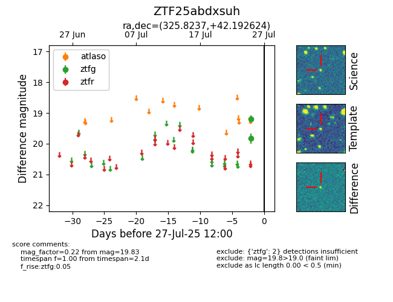

Target ZTF25abdxsuh at 2025-07-27 12:00, see:
FINK: fink-portal.org/ZTF25abdxsuh
Lasair: lasair-ztf.lsst.ac.uk/objects/ZTF25abdxsuh
ALeRCE: alerce.online/object/ZTF25abdxsuh
alt names
ZTF25abdxsuh (ztf,fink)
coordinates:
equatorial (ra, dec) = (325.8237,+42.19262)
galactic (l, b) = (89.7150,-8.23003)
photometry
last ztfg=19.83
2 ztfg detections
